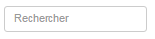

Recherche par mot clé : à la droite des filtres, une case pour entrer un ou plusieurs mots clés. Simplement entrer le(s) mot(s) en les séparant par le signe plus (+) s'ils sont non-consécutifs.NOTE: la recherche est insensible aux accents
Exemples :
- Mots clés consécutifs: metro banniere cherchera toutes les soumissions contenant l'expression 'metro banniere' dans au moins l'un des champs suivants : Client, Bannière, Projet, Critère.
- Mots clés non consécutifs: metro+banniere cherchera toutes les soumissions contenant ET le mot metro ET le mot banniere à travers l'un ou plusieurs des champs suivants : Client, Bannière, Projet, Critère.
- La recherche est insensible aux accents : entrer le mot metro cherchera toutes les variantes de ce mot avec ou sans accent (métro ou metro); de même, entrer le mot banniere cherchera pour bannière ou banniere.